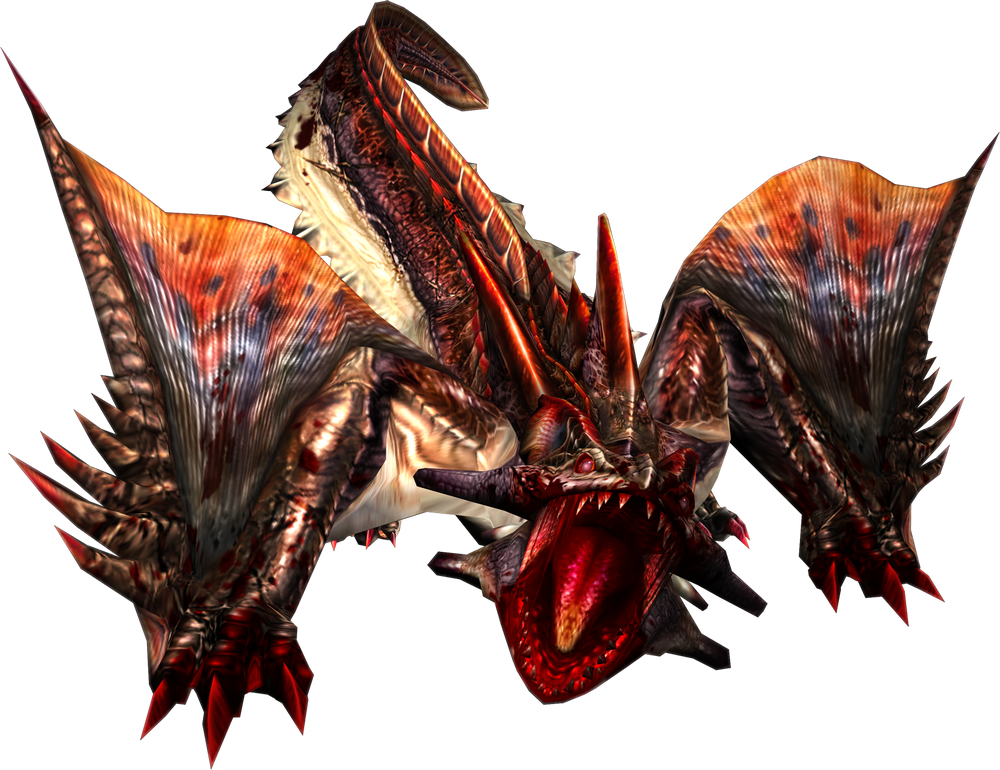
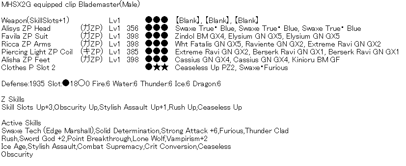
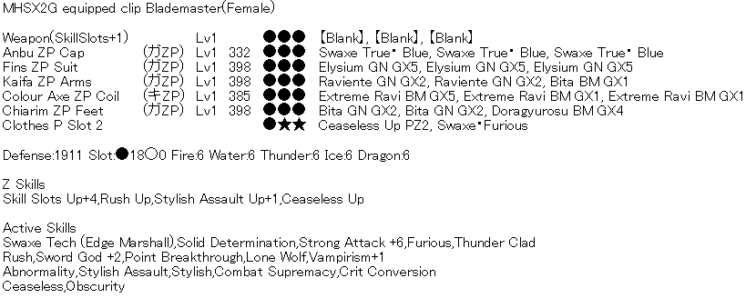
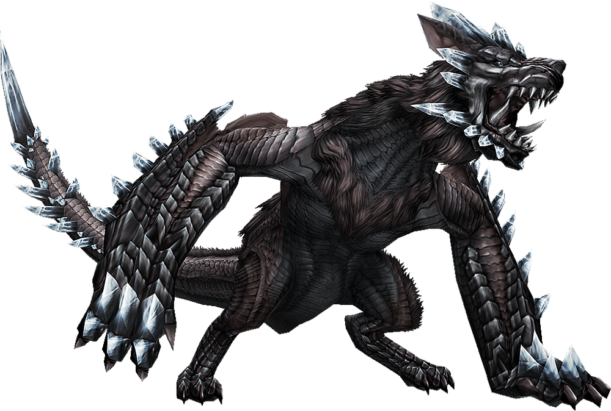
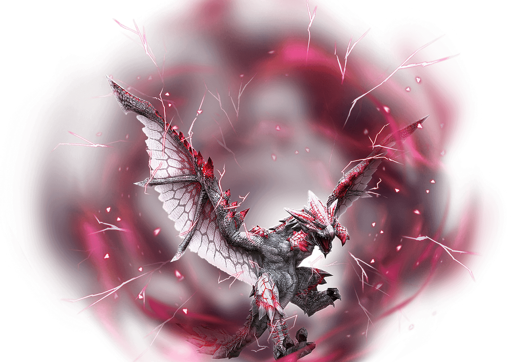
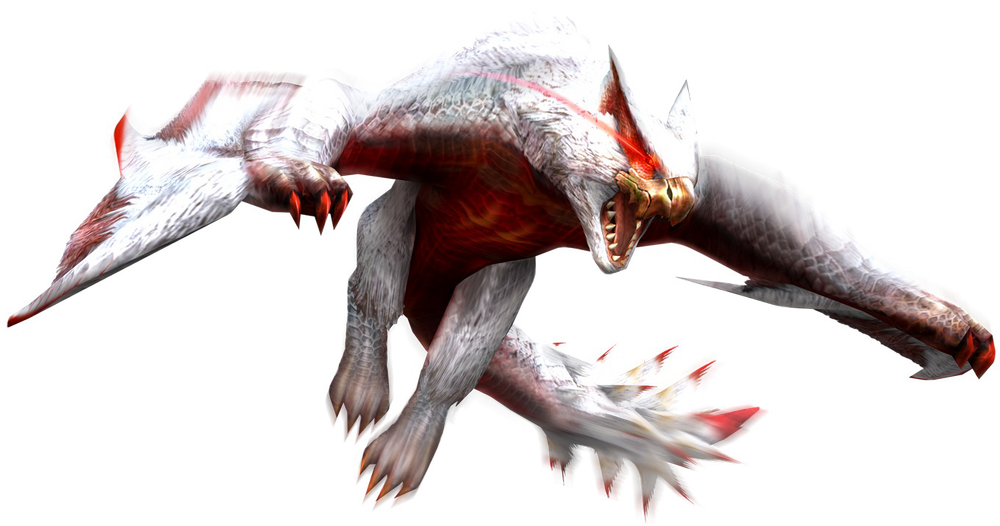
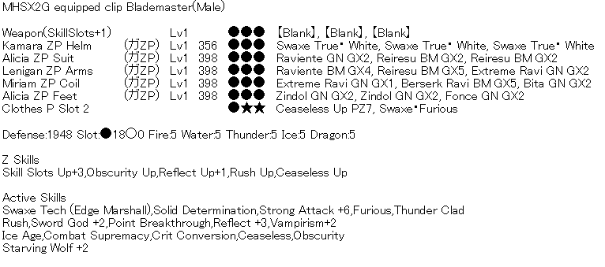
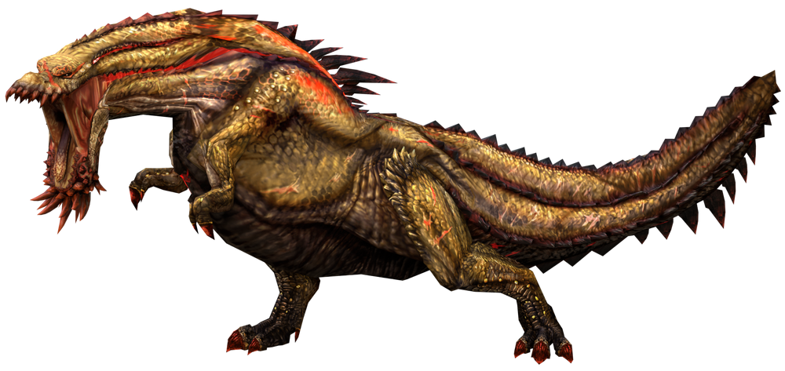
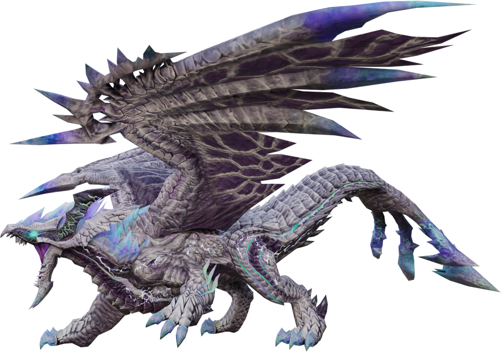

Fairly easy matchup:
Thirsty Pariapuria (Paria)
Very easy matchup mainly because he barely has any health and very good hitzones on top of that. Some of his attacks have wack hitboxes but that is given how outdated the fight is. His stone rain can sometimes be a bit annoying to parry (similar to narga rain) but most of his attacks have obvious tells and can be avoided even with CS.
Bombardier Bogabadorumu (Boga)
Similar to his Zenith version but has double explosions on all of his explosion attacks, 1.2 Million EHP and is slightly faster. Still not really that big of a deal, you can get very comfortable in the fight even with CS. Main "hard" moves are his slide when learning the fight and his double explosion trail. After the arm break the fight becomes very easy.
Howling Zinogre (Zino)
Pure parry matchup. ~500k EHP (relatively low). His moveset is perhaps a bit annoying to learn at first but once you get the hang of it it's usually enough to kill him consistently. Fight time gets lower the more you learn to PD. The most dangerous moves are his spin and his quick uppercut after rocks. It is recommended to learn the fight off the wall because he will dash around less but you can also fight him at the wall for more comfort.
Takes a bit to learn but manageable:
Mysterious Mi Ru
He has 375k EHP and is quite a fun matchup once you get to learn his moveset. Some of his hitboxes linger a very long time (like the one of his spins). Getting used to fire trails he sets out (and where they land) will also help in this matchup.
Ruler Guanzorumu (Guan)
With 200k EHP the lowest HP out of all Musous. I wouldn't really call this fight a Musou either, the fight mechanics are quite annoying to get used to but you may accidentally kill him without realizing. With CS the wind-pressure into tornadoes is the biggest run killer, together with his double arm slam and his nuke. Other than that all his moves are fairly easy to punish.
Upper Shiten Unknown (Unknown)
You can ignore HP numbers in the first phase of the fight (it's actually 6 separate phases but let's summarize them) since you can script the entirety of this phase. Her moves are super awkward, hitboxes are not aligned correctly and also really dumb and since she has Gen 1 rathian AI she has some of the dumbest 1 frame attack windups ever. Second phase attacks to look out for are mainly ones that wind-pressure you (fireballs etc.) and the wingflap, the sidehop into instant fireball and her run if you're too far. She only has 300k EHP in her last phase so she dies quickly.
Sparkling Zerureusu (Zeru)
Fairly decent to learn matchup but can be punishing if you're not careful. He has 750k EHP and does his intro attack at the start, at 50% and at 10% HP. The main thing that's gonna annoy you in this fight is his bite, his wind-pressure and hipcheck (which all he can do while you're hitlagged by an attack). Every other move can be avoided with good timing. Very good fight to learn CS on.
Hard matchup:
Blinking Nargacuga (Narga)
Narga is a relatively hard to learn matchup, although with 600k EHP you shouldn't have trouble killing him when you learn the fight the consistency is still a bit iffy on this fight. Main difficulty comes from his hitboxes being very sensitive to positioning (with CS it's way harder to reposition) and his rain attack needs to be parried when learning the fight with CS which needs good timing and fast fingers.
Extremely hard matchup:
Upper Shiten Disufiroa (Disu)
Awful fight doesn't even begin to describe it. Disu has 750k EHP but loses HP during the first phase transition. The fight consists of gauge management issues, the worst hitboxes the game has ever seen, mindnumbingly low attack frequency and hit rate (making it hard to even stack Stylish Assault) and on top of that size variation which make his best hitzone only consistently reachable if he's at least medium size small. I cannot think of a good reason to grind this fight other than for speedrunner but if you want to there are example runs on rain.
Arrogant Duremudira (Durem or Dure)
Very fun but also a ridiculously hard matchup on Swaxe, especially with CS. He also has 750k EHP and is inside a road quest meaning no diva skill and no starving wolf with adrenaline (unless you want to wait for 40 minutes). Very hard to learn since it's hard to tell apart all the windup to his attacks when first fighting him. You mostly stay at his tail when fighting him. Main difficult moves are especially the paw slam, the tail spin and his laser dash if you're in a bad spot.
Starving Deviljhos (Jhos)
Nightmare quest with Swaxe. Stand at a wall, parry and hope for the best. Each of them have 200k EHP and good thunder hitzones, but constantly stack attacks on top of each other which makes a hitless run nearly impossible to get. The really annoying attacks are their pin attacks, foot stomps hitting behind you and the hipcheck having little to no windup. Really only do this quest if you need to.
Hardest matchup in the game:
Burning Freezing Elzelion (Elz)
None of the monsters so far mentioned come even close to how hard this fight is. He has 1 Million EHP, a myriad of attacks that are very hard to deal with, very little recovery between attacks, awful tail hitbox and since the giant HP pool forces you to play as aggressive as possible he will do everything he can to do his running attack into ur hitlag. The most annoying mechanic of the fight is his nuke, wasting ~12 seconds every time he does it. This is the epitome of difficulty in this game, I'd recommend doing him last after doing every other Musou.
Builds against Musous/Shitens
Builds for matchups will be ordered according to the tier list difficulty. The sets presented in this section combine both effectiveness but also comfort for the matchup, meaning that the intended purpose of the set is to kill the monster as painlessly as possible. In the speedrunning section there will be additional builds for people that seek to highly optimize their damage and sacrifice all comfort in the matchup. If you want to know why certain skills are listed here, check out the In Depth Info section.
It is worth to note that every monster in the game can be killed with Despair Frostaxe "Flash", so if you don't have the suggested Swaxe and don't feel like grinding it, you can always use Despair Frostaxe "Flash" and it works perfectly fine.
Thirsty Pariapuria

Thirsty Paria has really low HP, most people don't consider him an endgame fight in zenith gear so this set
should get you covered if you're just going for a kill. For ele matching, go Black Charaxt since he's weak to fire
but Frostaxe will be more than good enough anyway.

Weapon: Black Charaxt (both power and ele works fine)
Sigils: SAF Up/Atk/Atk + All Atk + All Atk (Or Ele if you want to)
Guild Food: Incitement
Diva Skill: Starving Wolf+2
Poogie Skill: doesn't matter
SR Skills: Affinity/anything else
Caravan Skills: Weapon Art (lg)/Perfect Defense (lg)
Inventory: Shiriagari Fruit x1 (or Ele Atk Fruit x1 for ele), All Element Drug x1, Power Crystals x30, Sm Barrel Bomb x1, Starving Charm, Adrenaline Charm
Alternatively, if you want a challenge you can grab one of the GX sets with CS and replace Vigorous with something else and use the Burning Zero prayer switch axe called Enrapture Axt "Solo".
Bombardier Bogabadorumu

"Cheap" Build
Boga is a special matchup because of his high poison uptime and the fact that poison attacks his True HP (30k) instead of
the EHP (1.2 Million) meaning it is a very effective weapon to kill him even without using an Evo! The poison Swaxe in question would be the Tower Swaxe with the following upgrades:
Element: Invest 4 points and use the Ice Ele Sigil
Status: Invest until it says max and use the Poison Sigil
Sharpness: Invest 1 point
Attack: Use all the points that you have left
Additionally: Use a Skill Slots Up+1 Sigil to get the Z Skill on the weapon
The Tower Swaxe is very good because it needs almost no RDP to max it. Alternatively you can also use the Halloween Swaxe (Status Phial, Poison) that performs similarly. Now onto the set:

Weapon: Tower Swaxe
Sigils: Tower can't use normal sigils
Guild Food: Incitement
Diva Skill: Starving Wolf+2
Poogie Skill: doesn't matter
SR Skills: Affinity/anything else
Caravan Skills: Weapon Art (lg)/Perfect Defense (lg)
Inventory: Shiriagari Fruit x1, All Element Drug x1, Sm Barrel Bomb x1, Starving Charm, Adrenaline Charm
More Expensive Build
For Boga in most cases, the default CS+SW set works perfectly fine (ty Zaze for the set search). The matchup is especially interesting since it is one of the matchups where Despair Frostaxe "Shine" is straight up better than Despair Frostaxe "Flash" if you have a perfect Z Ele Sigil, which means Element phials rule in this fight. The element version of this build will be talked about in the speedrunning section.
A set that has Obscurity Up and Ice Age instead of Stylish+Up is worse but also works if it's purely for a kill.

Weapon: Despair Frostaxe "Flash"
Sigils: SAF Up/Atk/Atk + All Atk + All Atk
Guild Food: Incitement
Diva Skill: Starving Wolf+2
Poogie Skill: doesn't matter
SR Skills: Affinity/anything else
Caravan Skills: Weapon Art (lg)/Perfect Defense (lg)
Inventory: Shiriagari Fruit x1, All Element Drug x1, Power S. Crystals x30, Starving Charm, Adrenaline Charm
Howling Zinogre

The most comfy set for Zino is the standard non-CS reflect set. Using CS in this matchup is extremely uncomfortable in this
matchup due to his spin so going purely for a kill this set is much more comfortable.

Weapon: Despair Frostaxe "Flash"
Sigils: SAF Up/Atk/Atk + All Atk + All Atk (Replace one All Atk with perfect Z Atk Sigil if you have one)
Guild Food: Incitement
Diva Skill: Starving Wolf+2
Poogie Skill: Taijutsu
SR Skills: Affinity/anything else
Caravan Skills: Weapon Art (lg)/Perfect Defense (lg)
Inventory: Shiriagari Fruit x1, All Element Drug x1, Power S. Crystals x30, Sm Barrel Bomb x1, Starving Charm, Adrenaline Charm
Mysterious Mi ru

Quite an annoying matchup with Swaxe. His hitboxes are awful and parrying a lot of his attacks requires guard+2. Overall
he still dies quite fast especially with endgame gear so he should bring no issue. Because of his varying ele res on different parts it's more
comfortable to just go with Apophis Axe "Clear", especially since a stun offers a good opportunity for a discharge.

Weapon: Apophis Axe "Clear"
Sigils: SAF Up/Atk/Atk + All Atk + All Atk
Guild Food: Incitement
Diva Skill: Guard+2
Poogie Skill: Taijutsu
SR Skills: Affinity/anything else
Caravan Skills: Weapon Art (lg)/ KO Technique
Inventory: Shiriagari Fruit x1, Affinity Drink x1, Power S. Crystals x30, Sm Barrel Bomb x1, Starving Charm, Adrenaline Charm
Ruler Guanzorumu

For the 10 minute version of this quest you want to use the standard CS set. Some of his attacks are a bit annoying
to deal with using CS but the monster is so squishy that the fight generally isn't hard to grind for.
Weapon: Despair Boltaxe "Flash"
Sigils: SAF Up/Atk/Atk + All Atk + All Atk (Replace one All Atk with perfect Z Atk Sigil if you have one)
Guild Food: Incitement
Diva Skill: Starving Wolf+2
Poogie Skill: Taijutsu
SR Skills: Affinity/anything else
Caravan Skills: Weapon Art (lg)/Perfect Defense (lg)
Inventory: Thunder Atk Fruit x1, All Element Drug x1, Power S. Crystals x30, Sm Barrel Bomb x1, Starving Charm, Adrenaline Charm
For the 5 minute version of this quest you want to use a similar set as for Unknown (no diva skills) but with Obscurity Up instead of Ceaseless Up, more on that in the speedrunning section.
Upper Shiten Unknown

In this matchup you want to use a set which has both Starving Wolf and Lone Wolf to get Guard+2 in there
(it is essential for this fight). If you just want the kill don't bother taking Incitement as guild food and just
get Unaffected+3, there's a lot of nasty wind pressure in this fight. No sharpness recovery because you have
time to sharpen and apply crystals during the last phase transition.

Weapon: Despair Frostaxe "Flash" (use whatever element you want aside from fire)
Sigils: SAF Up/Atk/Atk + All Atk + All Atk
Guild Food: Unaffected+3 (Incitement if you wanna push for damage)
Diva Skill: Guard+2
Poogie Skill: doesn't matter
SR Skills: Affinity/anything else
Caravan Skills: Weapon Art (lg)/doesn't matter
Inventory: Shiriagari Fruit x1, Power S. Crystals x30, Perfect Whetstone x1, Starving Charm, Adrenaline Charm
Sparking Zerureusu

For Zeru we want the standard CS set, but you want to use Apophis Axe "Flash" since he has good dragon hitzones.
If you have a perfect Z Ele Sigil, Shine will actually outperform Flash by a lot which will be talked about in the
speedrunning section.
Weapon: Apophis Axe "Flash" (obviously just use Frostaxe "Flash" if you don't have it)
Sigils: SAF Up/Atk/Ark + All Atk + All Atk
Guild Food: Incitement
Diva Skill: Starving Wolf+2
Poogie Skill: doesn't matter
SR Skills: Affinity/anything else
Caravan Skills: Weapon Art (lg)/Perfect Defense (lg)
Inventory: Shiriagari Fruit x1, All Element Drug x1, Power S. Crystals x30, Sm Barrel Bomb x1, Starving Charm, Adrenaline Charm
Blinking Nargacuga

Here is where it gets interesting. I will present a non-CS version and a CS version, non-CS being
much easier to play in this matchup. You can choose whatever you prefer, just note that parrying the rain
requires precise timing with CS, with non-CS it's also not easy but you can avoid it altogether by just dodging
out of the second zone into the first zone after it started.
Non-CS Version
Non-CS version is just our standard reflect set from Zino. This is easier to play for a kill, you can dodge the rain procs and generally avoid nasty hitboxes by dodging.
Weapon: Despair Boltaxe "Flash"
Sigils: SAF Up/SAF (Guard)/Atk + All Atk + All Atk (Replace guard with Atk if you want, just a comfy option)
Guild Food: Incitement
Diva Skill: Starving Wolf+2
Poogie Skill: doesn't matter
SR Skills: Affinity/anything else
Caravan Skills: Weapon Art (lg)/Perfect Defense (lg)
Inventory: Shiriagari Fruit x1, All Element Drug x1, Power S. Crystals x30, Sm Barrel Bomb x1, Starving Charm, Adrenaline Charm
CS Version
CS is much harder to play vs narga because you have to parry the rain. Either way it also has more damage so the trade-off is worth it once you get more comfortable with the matchup.

Weapon: Despair Boltaxe "Flash"
Sigils: SAF Up/SAF (Guard)/Atk + All Atk + All Atk (Replace guard with Atk if you want, just a comfy option)
Guild Food: Incitement
Diva Skill: Lone Wolf
Poogie Skill: doesn't matter
SR Skills: Affinity/anything else
Caravan Skills: Weapon Art (lg)/Perfect Defense (lg)
Inventory: Shiriagari Fruit x1, All Element Drug x1, Power S. Crystals x30, Sm Barrel Bomb x1, Starving Charm, Adrenaline Charm
Starving Deviljhos

If you decide to torture yourself (like gino did) you have here a non-CS for one of the worst quests in the entire game
(seriously, it's terrible). Here you want to use Despair Boltaxe "Shine"
since they have really good thunder hitzones and their good cutting hitzones are hard to hit. If you want the CS version you can
look at it in the speedrunning section, for a kill alone it's not recommended
Weapon: Despair Boltaxe "Shine"
Sigils: SAF Up/SAF (Guard)/Ele + All Ele + All Ele (Replace Ele with Z Ele if you have it)
Guild Food: Unaffected+3
Diva Skill: Lone Wolf
Poogie Skill: Defense
SR Skills: Affinity/anything else
Caravan Skills: Weapon Art (lg)/Perfect Defense (lg)
Inventory: Thunder Atk Fruit x1, All Element Drug x1, Power S. Crystals x30, Sm Barrel Bomb x1, Starving Charm, Adrenaline Charm
Upper Shiten Disufiroa

Yea, this fight sucks. Going in there with or without CS, I will guarantee you will lose your mind grinding this fight, but victory
always tastes sweet right? Here you definitely want Black Flowaxt "Flash" since his legs have really good water hitzones
(even though you want to primarily hit the tail and wings, more on that later).
Pray to god you don't get shitboxed or lose your charge mid-fight,
but going for a kill is definitely doable without punching a hole in the wall (maybe).

Weapon: Black Flowaxt "Flash"
Sigils: SAF Up/Atk/Atk + All Atk + All Atk (Replace guard with Atk if you want, just a comfy option and All Atk with a Z sigil obviously)
Guild Food: Unaffected+3 (Incitement for damage, you will have to parry every wind pressure anyway to keep gauge)
Diva Skill: Starving Wolf+2
Poogie Skill: doesn't matter
SR Skills: Affinity/anything else
Caravan Skills: Weapon Art (lg)/Courage/Perfect Defense (Med)
Inventory: Shiriagari Fruit x1, All Element Drug x1, Power S. Crystals x30, Starving Charm, Adrenaline Charm
Arrogant Duremudira

Beautiful fight but also incredibly frustrating at the same time
if you decide to grind it with CS. Although it is hard, the good
thing is with a good setup you are usually not fighting against
timeout like for Elz, but dying once basically seals the deal without
Bonus Art and a good pace. Presented here are, similar to Narga,
a non-CS and a CS version that you can choose from, the
CS version making the fight substantially harder but also giving
you a lot more damage. The CS version is basically your standard CS set from Boga/Zeru with different guild food.
Non-CS Version
Easiest here would be to use the standard reflect set similar to the one for Zinogre, just with innate Lone Wolf.

Weapon: Despair Frostaxe "Flash"
Sigils: SAF Up/Atk/Atk + All Atk + All Atk (Replace guard with Atk if you want, just a comfy option)
Guild Food: Encourage+2
Diva Skill: doesn't exist here
Poogie Skill: Taijutsu
SR Skills: Affinity/anything else
Caravan Skills: Weapon Art (lg)/Perfect Defense (lg) (Get Bonus Art and Weapon Art (Med) for learning the fight)
Inventory: Power S. Crystals x30, (optional) G Immunizer x1 (on-site items, buy from cat)
CS Version
CS makes this matchup much harder but obviously gives you a lot more damage.
Weapon: Despair Frostaxe "Flash"
Sigils: SAF Up/Atk/Atk + All Atk + All Atk (Replace guard with Atk if you want, just a comfy option)
Guild Food: Encourage+2
Diva Skill: doesn't exist here
Poogie Skill: Taijutsu
SR Skills: Affinity/anything else
Caravan Skills: Weapon Art (lg)/Perfect Defense (lg) (Get Bonus Art and Weapon Art (Med) for learning the fight)
Inventory: Power S. Crystals x30, (optional) G Immunizer x1 (on-site items, buy from cat)
Burning Freezing Elzelion

Now onto the star of the list, Musou Elz. Here you definitely
want the standard non-CS reflect set at the start because CS
is incredibly hard to make work (possible, but atp not worth).
While it is possible to kill him with the Tower Swaxe, it will be a
very close run against timeout and generally a way worse grind
than with Despair Frostaxe "Flash", so it's best to wait till
you have that Evo at lvl 100 before attempting this fight.
Weapon: Despair Frostaxe "Flash"
Sigils: SAF Up/Atk/Atk + All Atk + All Atk
Guild Food: Incitement
Diva Skill: Starving Wolf+2
Poogie Skill: Taijutsu
SR Skills: Fire Res/All Res
Caravan Skills: Weapon Art (lg)/Perfect Defense (lg)
Inventory: Shiriagari Fruit, All Element Drug, Power S. Crystals x30, Sm Barrel Bomb x1, Starving Charm, Adrenaline Charm
While it is possible to run Shine in this quest (Mel has a video on his youtube) and it performs really well, it really benefits from the Z Sigil+Transcend uptime and grinding for this uptime is generally not fun. Additionally, his elemental hitzones are not good enough to make up for the damage loss on the sigil downtime. This is the most consistent build for killing him.
Special Quest: Musou Legion
Musou Legion is a special quest on the Rain server that consists of killing 5 Musous in succession with a time limit of 50 minutes. The order of the monsters is:
Boga → Zino → Elz → Narga → Zeru
This quest is quite tough even for someone having killed all of these monsters since you have to run most of it with adrenaline (you can drop adren after Elz if you're playing on Seph patch since it causes the Zeru at the end to die very quickly, dropping adren before is also possible but only if you play really well and don't get hit often). Obviously, Despair Frostaxe "Flash" is the best general option since most of these have really good or decent ice hitzones. What you want to run is a standard non-CS reflect set since otherwise Elz will be quite a bother (it's also much more comfortable to play on quest that's taking this long to be completed).
Weapon: Despair Frostaxe "Flash"
Sigils: SAF Up/Atk/Atk + All Atk + All Atk (Replace one All Atk with perfect Z Atk Sigil if you have one)
Guild Food: Incitement
Diva Skill: Starving Wolf+2
Poogie Skill: Taijutsu
SR Skills: Fire Res/All Res
Caravan Skills: Weapon Art (lg)/Perfect Defense (lg)
Inventory: Shiriagari Fruit x1, All Element Drug x1, Power S. Crystals x30, Farcaster x1, Exciteshroom x3, Bomb Mat x3, Starving Charm, Adrenaline Charm